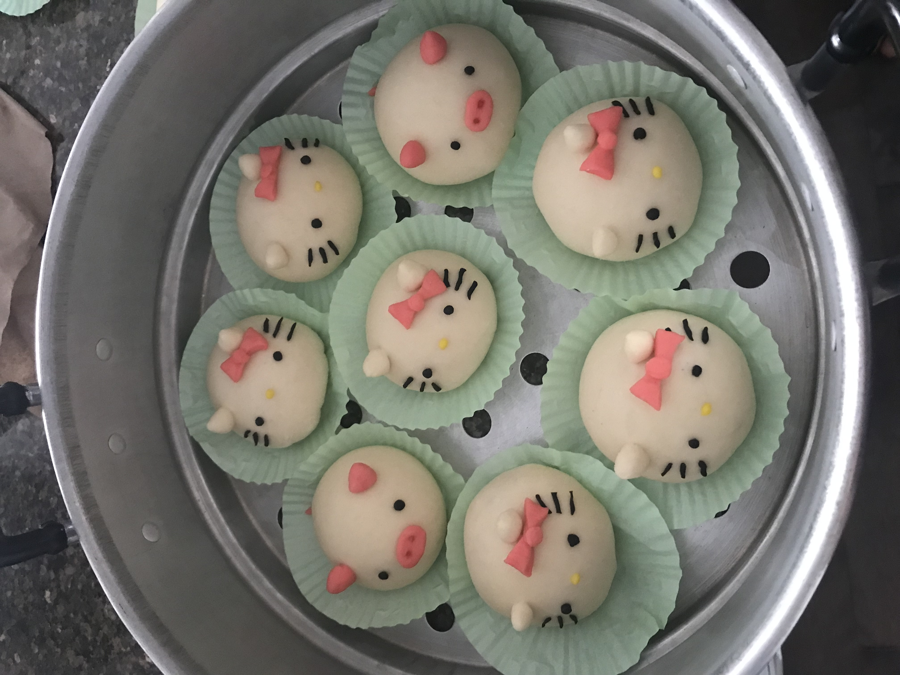

Custard Bao Buns

Fresh, pillowy soft, and delicious!
Nothing hits the spot like a warm, fluffy, not-too-sweet steamed bun! These custard bao buns are easy to make and are perfect as a snack or quick breakfast!
You can also shape the dough into cute animals, adding a personal touch!
Ingredients (makes 8 buns)
- 200g + 160g milk
- 20g butter
- 2 egg yolks
- vanilla extract (optional)
- 25g + 10g white sugar
- 20g tapioca starch
- 260g all-purpose flour
- 2g salt
- 3g instant yeast
- 4g baking powder
- 10g vegetable oil
Steps
- To make the custard filling, mix 200g of milk and the butter together over medium-low heat, constantly stirring until the butter has melted.
- Pour the mixture over the egg yolks, tapioca starch, 25g of sugar and a few drops of vanilla extract. Whisk until combined.
- Heat the mixture over medium heat until it thickens, then refrigerate for at least 2 hours.
- To make the dough, mix the flour, salt, yeast, baking powder, 10g of sugar and 160g of milk together until a shaggy dough forms.
- Place the dough onto a clean working surface and knead with the vegetable oil until smooth and springy.
- Cover the dough with a damp towel and allow it to rest for 1 hour.
- Divide the dough into 8 portions and roll them into balls.
- Flatten each ball and fill with a scoop of custard before sealing the bottom by pinching the dough with wet fingers.
- Steam over medium-high heat for 10-12 minutes.
- Enjoy your fresh steamed buns!